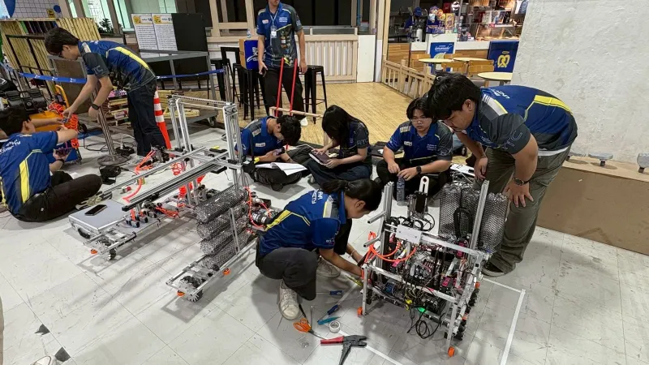

เฟิร์มแวร์หุ่นแข่ง ABU Robocon 2026Fail-safe radio firmware for an ABU Robocon 2026 robot
หุ่นกับคอนโทรลเลอร์มือถือคุยกันผ่านวิทยุด้วยโปรโตคอลที่ผมออกแบบเอง ทุกเฟรมตรวจด้วย CRC ถ้าขาดสัญญาณเกิน 1.5 วินาที หุ่นจะตัดไฟสเต็ปเปอร์ ลดความเร็วล้อจนหยุด แล้วจับคู่กับคอนโทรลเลอร์ใหม่โดยอัตโนมัติThe robot and a handheld controller talk over radio with a protocol I designed. Every frame is CRC-checked. If the link goes quiet for 1.5 s, the robot cuts its steppers, ramps the wheels to a stop and re-pairs on its own.
- 0SOF
- 1VER
- 2BTN
- 3AUX
- 4VX
- 5VY
- 6VT
- 7SPD
- 8MODE
- 9CRC8
เฟรมคำสั่งขับ 10 ไบต์ ผ่าน XBee ที่ 115200 baud · แตะไบต์ไหนก็ได้เพื่อทำให้เฟรมเสียThe 10-byte drive frame, over XBee at 115200 baud · tap any byte to corrupt it
#8กลุ่มมหาวิทยาลัยAmong universities
#13ทั้งประเทศNationally
